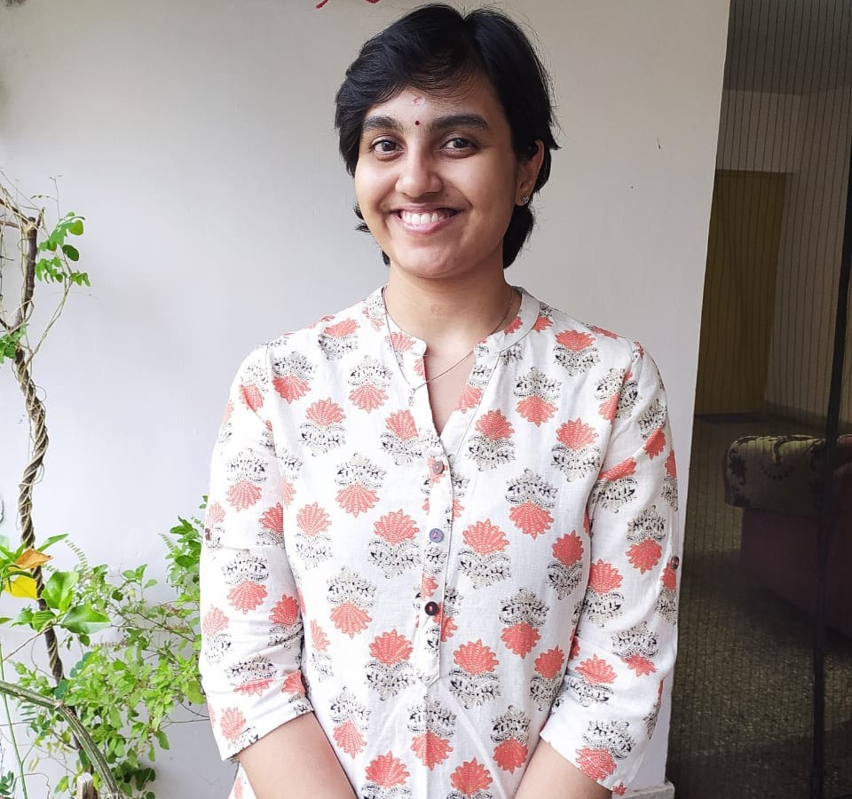

Hi! I'm Shamika.
I'm a multipotentialite , passionate about Artificial Intelligence and Arts. I have a Masters in Data Science and a Bachelors in Computer Science. I had been employed with Cisco Pvt. Ltd. prior to my Masters. I like to research about advancements in Machine Learning and Deep Learning and come up with innovative solutions for social good. I love exploring new areas in technology and art, and I also enjoy talking about what I know!
Learn about what I do